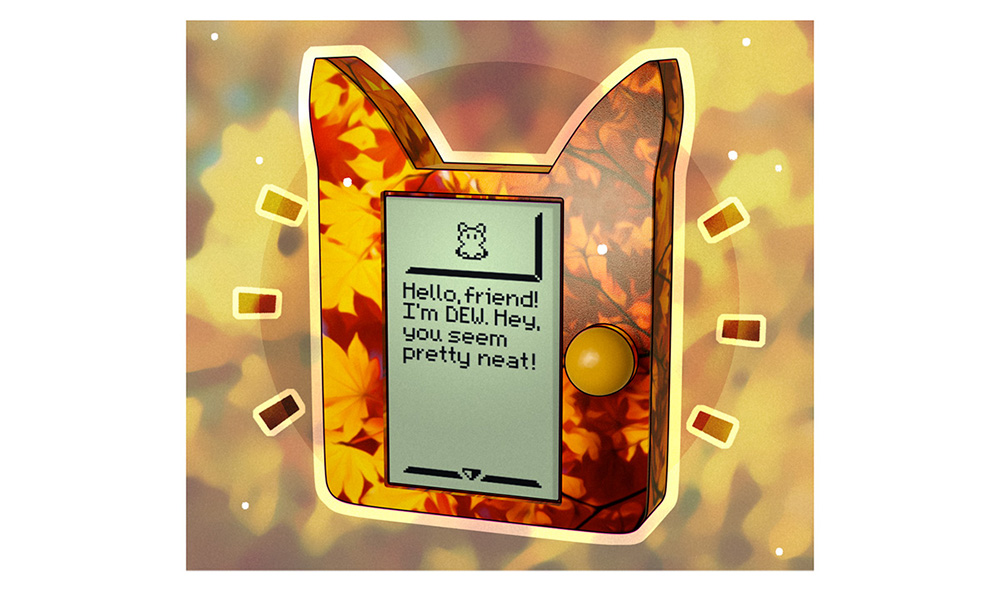
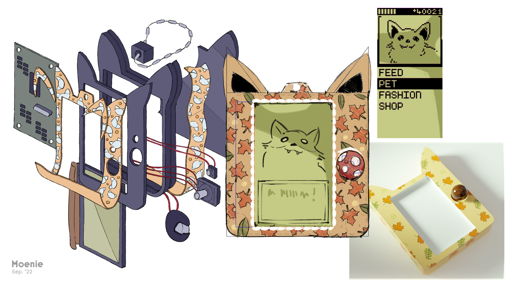

Moenie
Add this one to the "we might get round to it one day" list. This is Moenie, a concept for a little handheld virtual pet with whom you can interact throughout the day.
We haven't really developed much of a point of difference around this little guy yet. They should be customisable (to an extent) by the user, with options to choose from pre-made colours, patterns, and software themeing and configuration prior to manufacture. And they should also encourage limited, deliberate, and offline computing habits. One (ambitious) idea is to give the system a limited ability to be programmed. Here's a very cartoonish axonometric we did a while ago:
We have some of the knowledge and resources required to achieve this! But (similar to the situation with Scruffy, I guess) it still needs a special spark; a reason to exist before we can proceed. If anyone has any ideas, don't hesitate to let us know.